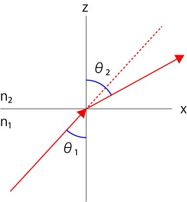

エバネッセント光の減衰
授業なので，エバネッセント光の減衰は指数関数的になる，数十～百ナノメートル程度である，と説明していますが，ちゃんと計算したことがなかったのでトライしてみました．
本来は電磁気学で解く問題かもしれませんが．．．．できれば波動光学で解きたい．．．．
一分子生物学（化学同人），の第14章に波動光学で解けるとあったのですが，残念ながら私には解けませんでした．
そこで，顕微分光法 第10巻（講談社），を参考に計算してみました（一部座標軸の表示，屈折率など変更しています）

まず，X軸を境に異なる屈折率を横切る光線を考えます．
スネルの法則から，
\(\Large n_1 \ sin \theta_1 = n_2 \ sin \theta_2 \)
となります．また，n1>n2，とします．
それぞれの空間で伝搬する平面波の振動は，
入射光：\(\Large u_1 \ (x,z,t) = A_0 \ exp \left[ i \left( n_1 k_0 cos \theta_1 \cdot z+n_1 k_0 sin \theta_1 \cdot x- \omega t \right) \right] \)
透過光：\(\Large u_2 \ (x,z,t) = B_0 \ exp \left[ i \left( n_2 k_0 cos \theta_2 \cdot z+n_2 k_0 sin \theta_2 \cdot x- \omega t \right) \right] \)
となります，ここでk0は光の波数で，2π/λ0です，それぞれの媒質の屈折率によって変化していることがわかります．
・全反射
入射角を大きくしていくと，
\(\Large sin \theta_2 = 1 \)
となり，屈折した光は界面の境界上を平衡に伝搬するようになります． このときの入射角を臨界角と呼び，
\(\Large sin \theta_c = \frac{n_2}{n_1} \)
となります．
\(\Large sin^2 \theta_2 + cos^2 \theta_2= 1 \)
の関係から，
\(\Large cos^2 \theta_2= 1 - sin^2 \theta_2 = 1- \left( \frac{n_1}{n_2} sin \theta_1 \right)^2 \)
\(\Large cos \theta_2=\sqrt{ 1- \frac{n_1^2}{n_2^2} sin^2 \theta_1 } = i \sqrt{ \frac{n_1^2}{n_2^2} sin^2 \theta_1 -1} = i \frac{n_1}{n_2} \sqrt{ sin^2 \theta_1 -\frac{n_2^2}{n_1^2}}\)
となります．
・透過光
透過光：\(\Large u_2 \ (x,z,t) = B_0 \ exp \left[ i \left( n_2 k_0 cos \theta_2 \cdot z+n_2 k_0 sin \theta_2 \cdot x- \omega t \right) \right] \) は，
\(\Large u_2 \ (x,z,t) = B_0 \ exp \left[ i \left( n_2 k_0 \left\{i \frac{n_1}{n_2} \sqrt{ sin^2 \theta_1 -\frac{n_2^2}{n_1^2}} \right\} \cdot z+n_2 k_0 sin \theta_2 \cdot x- \omega t \right) \right] \)
\(\Large =
B_0 \ exp \left[ - n_1 k_0 \sqrt{ sin^2 \theta_1 -\frac{n_2^2}{n_1^2}} \cdot z \right] exp \left[ i \left( n_2 k_0 sin \theta_2 \cdot x- \omega t \right) \right] \)
と振幅と振動に分けることができます． 光強度は振幅の二乗となるので， 強度は，
\(\Large I = \left\{ B_0 \ exp \left[ - n_1 k_0 \sqrt{ sin^2 \theta_1 -\frac{n_2^2}{n_1^2}} \cdot z \right] \right\}^2 \)
\(\Large = B_0^2 \ exp \left[ - 2 n_1 k_0 \sqrt{ sin^2 \theta_1 -\frac{n_2^2}{n_1^2}} \cdot z \right] \)
となります．減衰率（e-1となる距離）は，
\(\Large \tau = \frac{1}{ 2 n_1 k_0 \sqrt{ sin^2 \theta_1 -\frac{n_2^2}{n_1^2}} } \)
となります．波数，\(\Large k_0 = \frac{2 \pi}{\lambda_0}\)，から，
\(\Large \tau =
\frac{\lambda_0}{4 \pi n_1} \frac{1}{ \sqrt{ sin^2 \theta_1 -\frac{n_2^2}{n_1^2}} } \)
\(\Large =
\frac{\lambda_0}{4 \pi n_1} \frac{1}{ \sqrt{ sin^2 \theta_1 -sin^2 \theta_c} } \)
もしくは，
\(\Large = \frac{\lambda_0}{4 \pi } \frac{1}{ \sqrt{ n_1^2 sin^2 \theta_1 -n_2^2 } } \)
となり，ここなど，に示されている式となります．
・実際の侵入長
n1=1.515（ガラス），n2=1.33（水）を入れると，
\(\Large sin \theta_c = 61.39 \)度
波長を532nm，とすると最小の侵入長は，θcが1となる角度であるので，58.35nm，となります．
ちなみに，入射角を70度とすると，83.37nm，となります．
全反射ギリギリ，入射角を62度とすると，296nm，となります．